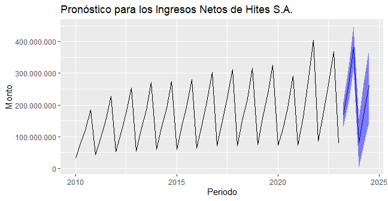
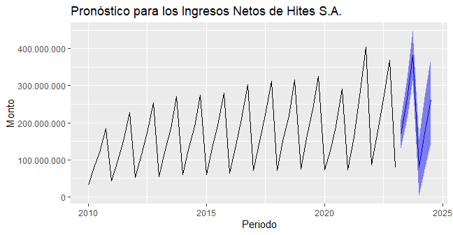

Analítica de Datos para la auditoría mediante lenguaje R
Esta es una página simple que busca mantener un registro de los plots obtenidos en un caso de estudio de auditoría utilizando lenguaje R. El caso en cuestión puede ser encontrado acá
Los paquetes a estudiar son forecast y stringr
forecast: Este paquete busca generar pronósticos en base a la información contenida en una base de datos.
stringr: Esta librería ofrece diferentes funciones para poder trabajar con cadenas de texto.
Datos de los Estados Financieros


forecast
 
